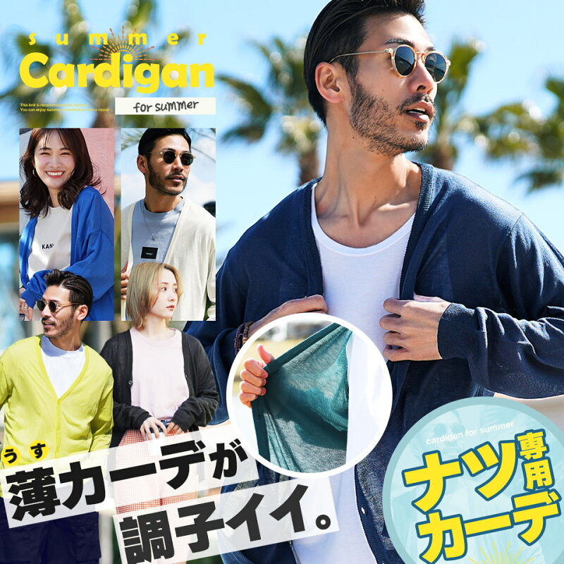

メンズファッション
ニットカーディガンおすすめ3選|メンズの選び方比較
2026-11-28

※本記事には商品プロモーション(アフィリエイト広告)を含みます【PR】
ニットカーディガンを選ぶときは、レビューの評価や件数、編み方やデザインの特徴、お手入れのしやすさなど着心地に関わるポイントを見比べることが大切です。ここでは人気の3点を取り上げ、それぞれの特徴を比較しながらタイプ別の選び方を紹介します。
やわらかな編み地が魅力の軽めの一枚
サマー カーディガン メンズは、レビューが平均4.25・2,581件と、3点の中でも非常に多くの人に選ばれている一枚です。商品説明によると甘編みの繊細な編地が特徴で、やさしい肌触りが魅力とされています。一方で水を含むと伸びやすい性質があるため、お手入れの際は押し洗いでの手洗いを行い、平干しまたは2つ折りにして日陰で干すとよいとされています。レビュー件数の多さという安心感と、やわらかな編み地の着心地を重視する方に向いている一枚です。

存在感のあるハイネックデザイン
ケーブル ニット カーディガン メンズは、レビューが平均4.34・1,506件と、3点の中でも評価の高さが目立つ一枚です。インパクトのある大きなボタンとスタンドハイネックが特徴で、ざっくりと羽織れる心地よい質感のニット素材が使われています。ボディ部分の編み立てなどデザイン性も高く、ボトムスを選ばずに合わせやすいため着回しやすいのも魅力です。お手入れについての記載は少ないものの、デザイン性と評価の高さを重視する方に向いています。

レビュー評価の高さが光る一枚
サマー カーディガン メンズは、レビューが平均4.3・1,370件となっており、件数は3点の中では最も少ないものの、評価の数値自体は3点の中でも高めです。商品名からも分かるように同じ系統のカーディガンですが、レビュー件数や評価のバランスは一つ目の商品と少し異なります。件数の多さよりも評価の高さを確かめたいという方や、まずは評価の高さを基準に選びたい方に向いている選択肢といえるでしょう。

レビュー件数の多さからくる安心感を重視するなら、評価件数の多いサマーカーディガン。デザイン性の高さを重視するなら、スタンドハイネックのケーブルニットカーディガン。評価の数値そのものの高さを重視するなら、評価の高いサマーカーディガンが向いています。

読み込み中...